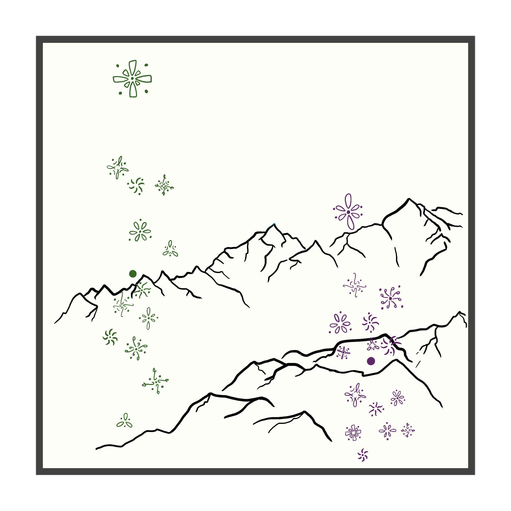

library(tidyverse) #package for making R easier to use, includes many packages
library(here) #package for file management
library(gt) #package for making tables
library(janitor) #package to clean data
library(plotly) #package for making interactive figures
library(DT) #package for making interactive tables
mydata <- read.csv("C:/Users/jlrum/MyGit/jrumkin.github.io/posts/personal-data-project/mydata.csv") #read in mydata filePersonal Data Project
RStudio
Data Science
UCSB
A data science project based on data I collected on my life.
A project for UCSB ENV S 193DS. I collected data on my study habits with several variables to answer my main question: Am I more productive when I work by myself or with at least one other person?
Use side navigation to jump to code or interactive figures.
Set Up
#summarizing personal data
mydata_summary <- mydata |> #make an object called mydata_summary using mydata file
group_by(accompanied) |> #group the sumary by company type
summarise(mean_score = round(mean(final_productivity_score),digits = 1), #find mean
sd = round(sd(final_productivity_score), digits = 1), #find standard deviation
se = round((sd(final_productivity_score)/sqrt(length(final_productivity_score))),digits = 1), #find standard error
ci_lower = round(mean_score - 1.96 * (sd(final_productivity_score)/ sqrt(length(final_productivity_score))),digits = 1), #find lower confidence interval at 95%
ci_upper = round(mean_score + 1.96 * (sd(final_productivity_score) / sqrt(length(final_productivity_score))),digits = 1) #find upper confidence interval at 95%
) |>
mutate(marker = paste0("Type: ", accompanied, "<br>", #adding a column called marker which will be called on later by the interactive figure to display the mean and confidence interval
"Mean: ", mean_score, "<br>",
"95% Confidence interval for mean: ", ci_upper, " - ", ci_lower))
Note on the Marker Column
This column is created to be the hover-text/tooltip in the interactive figure. This marker column uses defined “text”, defined line breaks “
”, and response variables that call to an existing field.
Ex: “Type:” will print exaclty as that and be the first thing in the marker. Next is accompanied, which calls on that field and will print “Accompanied” or “Alone” depending on where the curser is hovering.
The mutate function to create a marker column is used again in the Data Visualization Code
Interactive data table
Brief data dictionary for mydata
Response Variable: Final Productivity Score Pre-selected predictor variable: accompanied (Accompanied or Alone)
Other variables collected: Company type (Alone, Friend, or Acquaintance), Sleep (decimal hour), deadline type (self imposed or external), and weather (Warm, Cold, Wind, or Rain)
Focus Score was self determined using this guideline: (1 is the lowest, 5 is the highest, discrete numeric data)
1: Constantly distracted + brain fog, low critical thinking applied
2: Frequently distracted, trouble staying on task, bored, needed to re-do or re-read instructions many times
3: Occasionally distracted, able to return to the task at hand without severe backtracking
4: Mostly focused, some distractions but they are usually intentional breaks
5: Highly focused, very few to no distractions, efficient workflow
#Using package DT to create an interactive table
datatable(data = mydata)Data Visualization Code
# new mydata object with marker column
mydata_marker <- mydata |>
# create a new column/field called marker
mutate(marker = paste0("Type: ", company_type, "<br>",
"Score: ", focus_score, " × ", "Duration (hr): ", duration_decimal_hour, "<br>",
"= ", "Final Productivity Score: ", final_productivity_score)) #this marker will be displayed when the cursur hovers over a data point in the interactive figure. It displays the data values and how they are used to calculate the productivity score, which is the value each data point is being plotted with#creating static visualizations for personal data
mydata_static <- ggplot(data = mydata_marker, #using ggplot to create a static figure
aes(x = accompanied, #x axis is by accompanied group
y = final_productivity_score, #y axis is by final productivity score
color = accompanied, #color the data by accompanied group
text = marker)) + #this text field is not used in ggplot directly, but will be called on later by plotly to create the hover-text. This is saying the hover-text should display the marker field - which was created earlier for this purpose
geom_jitter(height = 0, #add geometry of jitter plot, 0 height jitter
width = 0.2, #0.2 jitter width
shape = 20) + #shape is open circles for the jitter points
geom_errorbar(data = mydata_summary, #add a geometry of an error bar from data of mydata_summary
aes(x = accompanied, #x axis by accompanied
y = mean_score, # y axis by average productivity scores
ymin = ci_lower, #error bar lower
ymax = ci_upper, #error bar upper
width = 0.12), #manual width of the bars
color = "black") + #color them black for visual ease
geom_point(data = mydata_summary, #add geometry of a point from mydata_summary of the mean productivity score
aes(x = accompanied, #x axis by accompnied
y = mean_score), # y axis is the mean productivity score
color = "black", #point showing the mean is black
size = 2) +
labs(x = "Company Type", #labling the x and y axis and the title
y = "Final Productivity Score",
title = "Mean Productivity Score between \nAccompanied and Alone study sessions") +
scale_color_manual(values = c("Accompanied" = "#377b42", #manual colors for groups
"Alone" = "#AA71BA")) +
theme_minimal() + #minimal theme
theme(legend.position = "none") #remove legend because it's redundent
#using plotly package to make the figure interactive
mydata_interactive <- ggplotly(mydata_static, tooltip = "text") |>
layout( #edit the layout of the figure and details
font = list(family = "Times"), #use Times fonts for the figure axis and title
# editing the marker/tooltip/hover-text
hoverlabel = list(
# editing the font for the marker hover-text
font = list(
family = "Times",
size = 13,
color = "#FFFFFF",
align = "left"
)))Mean Productivity Interactive Figure
Affective Data Visualization

Artist Statement
This data visualization shows my personal data on study habits and productivity throughout the Spring 2025 quarter. The green doodles are data points for when I studied with other people and the purple doodles are data points when I studied on my own, and each dot around or in each doodle represents my focus score for that study session. I took a lot of inspiration from Stefanie Posavec and Giorgia Lupi’s Dear Data project for representing data points as small illustrations. I drew the visualization on my iPad using an app called ProCreate. I started by putting a few of my ideas onto one page to see what I liked and honed the idea from there. I drew the mountain range first to represent the slope of my productivity scores over time. I then drew the data points based off the main jitter and mean plot created in Problem 1b and then drew the illustrations last while matching them to actual observations.